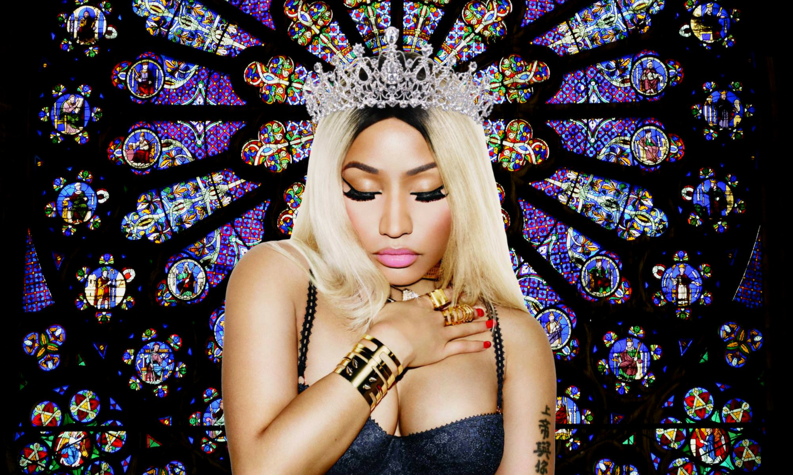

Главная | Общая информация | История | Дискография | Фильмография | Ссылки |
| Год | Русское название | Оригинальное название | Афиша | Примечание |
| 2010 | Мое время сейчас | My Time Now | Документальный фильм о Ники Минаж и ее путешествии, которое привело ее к моменту славы. | |
| 2014 | Другая женщина | The other woman | Карли, успешный юрист и шикарная «штучка» из Нью-Йорка, и Марк — успешный венчурный инвестор — встречаются уже два месяца. Всё идёт хорошо, Марк — идеальный мужчина, и Карли начинает мечтать о большем, чем просто роман. Однако неожиданно для себя она обнаруживает, что Марк — женат, хотя свой брак тщательно скрывает. Его жена, Кейт, милая, домашняя, слегка «провинциальная» молодая женщина, ничего не знает об изменах мужа, она думает, что он часто уезжает из их городка исключительно по работе. Для Кейт новость об измене мужа становится глубоким потрясением, она даже пытается поговорить с Карли, чтобы понять, почему её муж изменил. В процессе не очень приятно начатого общения две девушки выясняют, что у Марка есть ещё одна женщина — Эмбер, юная жительница Майами. Марк оказывается вруном и мошенником, ворующим идеи своей жены для стартапов и проворачивания своих махинаций (используя её как прикрытие для обмана даже деловых партнёров). И все три девушки объединяются и решают наказать лжеца и подлеца. | |
| 2014 | Розовый отпечаток | The Pinkprint Movie | В поддержку третьего студийного альбома «The Pinkprint» | |
| 2015 | Мое время снова | My Time Again | Документальный фильм о Ники Минаж и пути, который она прошла, чтобы добраться до определенного места в ее жизни, и о подготовке к ее третьему студийному альбому The Pinkprint. Это ее второй специальный выпуск на MTV и продолжение ее первого специального выпуска MTV 2010 года под названием « Ники Минаж: Мое время сейчас». |
|
| 2016 | Парикмахерская 3 | Barbershop 3 | Келвин управляет парикмахерской, в которой теперь появился и женский зал. Женщины и мужчины целыми днями обсуждают взаимоотношения полов либо политику, например расизм. В последнее время в этом районе Чикаго, в котором расположена парикмахерская, ухудшилась обстановка. На улицах орудуют уличные банды, слышна стрельба и частенько кого-то убивают. Городские власти даже подумывают обнести этот район стеной, чтобы преступность не перекидывалась в другие части города. Келвин в тайне ото всех подумывает о том, чтобы переехать и перенести парикмахерскую в более благополучную часть города, поскольку не хочет, чтобы его сын рос в таком месте. Работники парикмахерской решают попробовать устроить перемирие в своём районе. Они приводят в парикмахерскую членов разных банд, и берут с них обещание не стрелять хотя бы два выходных дня. Те соглашаются из уважения к Келвину. Со своей стороны парикмахеры будут все выходные стричь бесплатно, и раздавать еду всем желающим. Акцию рекламируют в твиттере, и парикмахерскую даже посещает знаменитость в лице баскетболиста Энтони Дэвиса. Однако приезжает полиция, чтобы сообщить, что парня, который подрабатывал в этой парикмахерской, застрелили сегодня на выходе из библиотеки. Опустошённый Келвин теряет надежду на мир в районе и отправляется в бар. Его утешает Эдди, который уверяет, что их акция не была напрасной. В парикмахерскую прибегает взволнованный Кенни, который рассказывает, что прямо сейчас Джален собирается вступить в банду. Келвин срочно отправляется спасать сына, но, приехав на место, обнаруживает, что юные бандиты уехали, не взяв с собой его сына. Джален отказался становиться членом банды. Проходит некоторое время и парикмахерскую собственной персоной посещает президент Барак Обама. |
|
| 2018 | Королева | Queen |  | Ники Минаж записала документальный фильм, посвященный процессу записи ее четвертого студийного альбома Queen , а также трудностям в ее личной жизни. |